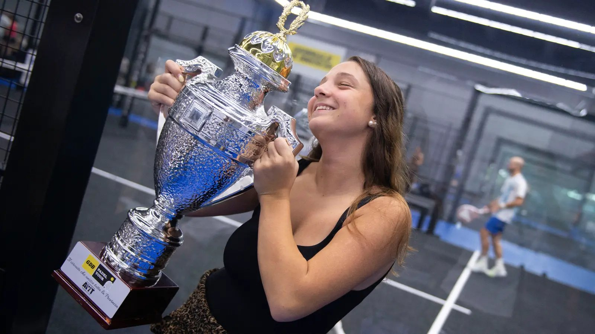

Un Master da applausi: si chiude il GdB Padel Tour
A Castenedolo nove categorie hanno chiuso tre mesi di gare con match combattuti e tanta voglia di stare insieme.

Doveva essere una grande festa, ed è stata una grande festa. Dopo oltre tre mesi di tappe, il GdB Padel Tour, organizzato insieme ad Awt, ha chiuso la stagione nella nuova struttura del Ten Padel di Castenedolo, inaugurata proprio per il Master finale.
I numeri della giornata
- 104 giocatori sui cinque campi del centro
- 9 categorie in gara, dal mattino fino a sera
- 8mila euro di montepremi in prodotti tecnici
- Un pubblico numeroso, arrivato fin dalle prime partite
Storie dal torneo
Nella quinta categoria maschile hanno vinto ancora Lancini e Cominelli, già primi in tre tappe su quattro: dopo un esordio sofferto, chiuso solo al tie break, hanno preso il controllo e vinto la finale con un doppio 6-2. Al femminile, Menni e Nolli si sono messe in coppia solo per il Master e hanno trovato subito l'intesa.
Eugenia Alessia Todaro, ex tennista, ha fatto la doppietta: titolo nel misto di quarta e finale vinta in terza categoria femminile insieme a Lazzaroni. Tra i momenti più spettacolari, la finale di terza maschile, decisa da un tie break infinito chiuso 21-19.
L'ultimo trofeo, quello della seconda categoria maschile, il livello più alto del Master, è andato a Barbi e Tonelli, con una finale senza sbavature.
Partite combattute che hanno regalato i trofei, ma anche la voglia di stare insieme e di divertirsi.
Sintesi a solo scopo illustrativo. Fonte originale: Giornale di Brescia.